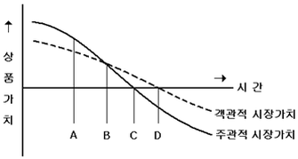
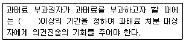

폐기물처리산업기사 (2007-03-04 기출문제)
1과목: 폐기물개론
1. 함수율이 62%이며 건조고형물의 비중이 1.42인 슬러지의 비중은?
- 1.021
- 1.071
- 1.127
- 1.174
(정답률: 알수없음)

2. 시간에 따른 객관적 시장가치와 소비자의 주관적 평가가치를 나타낸 그림에서 재이용 가치가 없는 완전한 폐기물로 발생 되는 시점은?

- A
- B
- C
- D
(정답률: 알수없음)
3. 일반적으로 적환장 설치조건과 가장 거리가 먼 것은?
- 작은 용량의 수집차량을 사용할 때
- 고밀도 거주지역이 존재할 때
- 불법 투기와 다량의 어지러진 쓰레기들이 발생할 때
- 슬러지 수송이나 공기수송 방식을 사용할 때
(정답률: 알수없음)
4. 폐기물선별방법 중 분쇄한 전기줄로 부터 금속을 회수하거나 분쇄된 자동차나 연소재로부터 알루미늄, 구리 등을 회수하는데 사용되는 선별장치로 가장 적절한 것은?
- Fluidized bed separators
- Stoners
- Optical sorting
- Jigs
(정답률: 알수없음)
5. 채취한 쓰레기 시료에 대한 성상분석 절차로 적합한 것은?
- 밀도측정 → 물리적 조성 → 건조 → 분류
- 밀도측정 → 분류 → 물리적 조성 → 건조
- 물리적 조성 → 밀도측정 → 건조 → 분류
- 물리적 조성 → 밀도측정 → 분류 → 건조
(정답률: 알수없음)
6. 어떤 도시에서 발생되는 쓰레기를 인부 840명이 1일 8시간의 작업으로 수거 운반시 MHT는? (단, 연간수거실적은 2,851,312 ton, 인부의 휴가일수는 연중 60일(1인당)이다. 1년 = 365일)
- 0.34
- 0.56
- 0.72
- 0.96
(정답률: 알수없음)
7. 적재량 15m3인 수거차량으로 년 간 10만대분의 쓰레기가 인구 100만명인 도시에서 발생하고 있다. 이때 쓰레기의 밀도가 600kg/m3라면 1인 1일 발생하는 무게는 몇 kg 인가? (단, 1년 = 365일, 적재계수 1.0 이고 인구증가율 등은 무시한다.)
- 약 2.13 kg
- 약 2.24 kg
- 약 2.32 kg
- 약 2.47 kg
(정답률: 알수없음)
8. 사금선별을 위해 오래전부터 사용되던 습식 선별방법은?
- Jigs
- Secators
- Trommel Screen
- Ballistic Separator
(정답률: 알수없음)
9. 인구가 20만명인 어떤 도시의 폐기물 수거실적은 504,970ton/년 이었다. 폐기물 수거율이 총 배출량의 75%라고 하면 이 도시의 1인 1일 배출량은? (단, 1년 = 365일)
- 약 0.71 kg
- 약 0.92 kg
- 약 1.34 kg
- 약 1.81 kg
(정답률: 알수없음)
10. 인구 200만명의 도시에서 발생되는 폐기물의 가연성분을 이용하여 RDF를 생산하고자 한다. 최대생산량(ton/일)은? (단, 폐기물중 가연성분 80%(무게기준), 가연성분 회수율 50%(무게기준), 폐기물 발생량 1.3 kg/인ㆍ일)
- 4,180
- 3,210
- 2,350
- 1,040
(정답률: 알수없음)
11. 쓰레기 발생량에 영향을 주는 모든 인자를 시간에 대한 함수로 나타낸 후, 시간에 대한 함수로 표현된 각 영향인자들 간의 상관관계를 수식화 하는 쓰레기 발생량 예측 방법은?
- 시간인자회귀모델
- 다중회귀모델
- 정적모사모델
- 동적모사모델
(정답률: 알수없음)
12. 밀도가 500 kg/m3인 폐기물 5 ton을 압축시켰더니 처음 부피보다 60%가 감소하였다. 이 때 압축비(CR)는?
- 1.5
- 2.0
- 2.5
- 3.0
(정답률: 알수없음)
13. 쓰레기 관리 체계에서 비용이 가장 많이 드는 것은?
- 수거
- 저장
- 처리
- 처분
(정답률: 알수없음)
14. 효과적인 수거노선의 결정을 위해 차량의 이동거리 단축이 요구된다. 수거노선의 결정시 유의사항으로 옳은 것은?
- 아주 많은 양의 쓰레기가 발생되는 발생원은 가장 나중에 수거한다.
- 적은 양의 쓰레기가 발생하나 동일한 수거빈도를 받기를 원하는 적재지점은 가능한 한 같은날 왕복내에서 수거한다.
- 언덕지역에서는 언덕의 아래에서부터 적재하면서 차량을 위로 진행하도록 한다.
- 가능한 한 반시계 방향으로 수거노선을 정한다.
(정답률: 알수없음)
15. 1992년 리우데자네이로에서 가진 유엔환경개발회의에서 대두된 용어(약자)로 [친환경이면서 지속 가능한 개발]이란 뜻을 가진 것은?
- EPSS
- ESSD
- EEZ
- POHC
(정답률: 알수없음)
16. 다음 중 원소 분석 결과를 이용한 발열량 산정식이 아닌 것은?
- Steuer 식
- Dulong 식
- Scheurer-kestner 식
- Lambert 식
(정답률: 알수없음)
17. 쓰레기의 저위발열량을 추정하기 위한 쓰레기 3성분과 가장 거리가 먼 것은?
- 수분
- 가연분
- 고정탄소
- 회분
(정답률: 알수없음)
18. 쓰레기 발열량 조사방법 중 물질수지법에 관한 설명으로 틀린 것은?
- 주로 산업폐기물 발생량을 추산할 때 이용된다.
- 먼저 조사하고자 하는 계의 경계를 정확하게 설정한다.
- 물질수지를 세울 수 있는 상세한 데이터가 있는 경우에 가능하다.
- 비용이 저렴하여 일반적으로 폭 넓게 사용된다.
(정답률: 알수없음)
19. 공기선별기 중 컬럼내 난류를 높여줌으로써 선별효율을 증진시키고자 고안된 형태의 것은?
- 수평공기선별기
- Zigzag 공기선별기
- 경사공기선별기
- Multi 공기선별기
(정답률: 알수없음)
20. 다음 중 현재 우리나라에서 가장 많이 발생되는 생활폐기물은?
- 연탄재
- 음식쓰레기류
- 플라스틱류
- 섬유류
(정답률: 알수없음)
2과목: 폐기물처리기술
21. 매립지의 가스발생 단계 중 산소는 급격히 소비되고 아산화탄소가 생성되며 질소가 급격히 소모되기 시작하는 단계는?
- 호기성 상태
- 혐기성 상태
- 협기성 도달
- 정상 상태
(정답률: 알수없음)
22. 전과정평가(LCA)는 4부분으로 구성되어진다. 이에 속하지 않는 것은?
- 목록분석
- 영향평가
- 개선평가
- 사후관리
(정답률: 알수없음)
23. 중유 300kg/hr를 과잉공기계수 1.2로 연소시킬 때 연소실로 주입되는 공기 온도를 20℃에서 120℃로 올리기 위하여 요구되는 열량은? (단, 중유의 저위발열량 10,000kcal/kg, 이론공기량은 10 Sm3/kg, 공기의 평균 비열은 0.31kcal/Sm3ㆍ℃)
- 111,600 kcal/hr
- 133,200 kcal/hr
- 153,600 kcal/hr
- 173,200 kcal/hr
(정답률: 알수없음)
24. 탈수가 가장 용이한 슬러지내 물의 형태는?
- 내부수
- 표면부착수
- 쐐기상 부착수
- 모관결합수
(정답률: 알수없음)
25. 분뇨 저류 포기조에 400kℓ의 분뇨를 유입시켜 5일 동안 연속 포기하였더니 BOD가 40% 제거 되었다. BOD 제거 kg당 공기공급량 50m3로 하였을 때 시간당 공기 공급량은? (단, 분뇨의 BOD는 20,000mg/ℓ, 비중 : 1.0)
- 약 1,892 m3/hr
- 약 1,643 m3/hr
- 약 1,334 m3/hr
- 약 1,161 m3/hr
(정답률: 알수없음)
26. BOD 15,000mg/ℓ, Cl- 800ppm인 분뇨를 희석하여 활성슬러지법으로 처리한 결과 BOD 40mg/L, Cl- 40ppm 이었을 때 활성슬러지법의 BOD 처리효율(%)은? (단, 염소는 활성슬러지법에 의해 처리되지 않음)
- 93.5
- 94.7
- 97.4
- 99.1
(정답률: 알수없음)
27. 슬러지를 개량(conditioning)하는 주된 목적은?
- 농축 성질을 향상시킨다.
- 탈수 성질을 향상시킨다.
- 소화 성실을 향상시킨다.
- 구성성분 성질을 개선, 향상시킨다.
(정답률: 알수없음)
28. 메탄올(CH3OH) 3kg이 연소하는데 필요한 이론 공기량은?
- 10 Sm3
- 15 Sm3
- 20 Sm3
- 25 Sm3
(정답률: 알수없음)
29. 고형화 방법 중 ‘자가시멘트법’에 관한 설명으로 틀린 것은?
- 혼합율(MR)이 낮다.
- 중금속의 처리에 효율적이다.
- 탈수 등 전처리가 필요없다
- 보조에너지가 필요없다.
(정답률: 알수없음)
30. 매립지에서 발생하는 침출수의 특성이 COD/TOC : 2.0 - 2.8, BOD/COD : 0.1 - 0.5, 매립연한 : 5년 - 10년, COD(mg/L) 500 - 10,000 일 때 가장 효율적 처리공정은?
- 생물학적 처리
- 이온교환수지
- 활성탄 흡착
- 역삼투
(정답률: 알수없음)
31. 코오크스 또는 분해연소가 끝난 석탄 자체가 연소하는 과정으로 연소되면 적열(赤熱)할 뿐 화염이 없는 연소는?
- 증발연소
- 표면연소
- 내부연소
- 자기연소
(정답률: 알수없음)
32. 열교환기 중 과열기에 관한 설명으로 틀린 것은?
- 과열기는 방사형 과열기, 대류형 과열기 및 방사, 대류형 과열기로 분류된다.
- 과열기의 재료는 탄소강을 비롯 니켈, 크롬, 몰리브덴, 바나듐 등을 함유한 특수 내열 강관을 사용한다.
- 보일러 터어빈에서 팽창하여 포화증기에 가까워진 증기를 다시 예열하여 터어빈에 되돌려 팽창시킨다.
- 과열기는 부착위치에 따라 전열 형태가 다르다.
(정답률: 알수없음)
33. 매립지로부터 침출수의 유출을 방지하기 위한 내용으로 적절한 것은? (단, 매립지내 물의 이동을 나타내는 DARCY의 법칙 기준)
- 투수계수는 증가시키고 수두차는 감소시킨다.
- 투수계수는 감소시키고 수두차는 증가시킨다.
- 투수계수 및 수두차를 감소시킨다.
- 투수계수 및 수두차를 증가시킨다.
(정답률: 알수없음)
34. 분뇨를 소화처리함에 있어 소화 대상 분뇨량 Q=100m3/일, 분뇨내 유기물 농도가 20,000ppm이라면 가스발생량은? (단, 유기물 소화에 따른 가스발생량은 500ℓ/kg-유기물, 유기물전량 소화, 분뇨비중은 1.0으로 가정함)
- 1,000 m3/일
- 1,500 m3/일
- 2,000 m3/일
- 2,500 m3/일
(정답률: 알수없음)
35. 액상분사 소각로(Liquid Injection Incinerator)의 단점으로 틀린 것은?
- 구동장치가 복잡하여 고장이 잦다.
- 완전히 연소시켜야 하며 내화물의 파손을 막아주어야 한다.
- 고형분의 농도가 높으면 버너가 막히기 쉽다.
- 대량 처리가 불가능하다.
(정답률: 알수없음)
36. 어느 도시에서 소각대상 폐기물이 1일 100ton 발생하고 있다. 스토커가 소각로에서 화상부하율을 200 kg/m3ㆍhr로 설계하고자 하는 경우 소요되는 스토커의 화상면적은? (단, 소각로는 연속 운행함)
- 약 21 m3
- 약 42 m3
- 약 214 m3
- 약 521 m3
(정답률: 알수없음)
37. 고형분 20%의 주방 찌꺼기 12ton이 있다. 소각을 위하여 함수율이 60% 되게 건조시켰다면 이때의 무게는? (단, 비중은 1.0, 건조시 고형분의 손실은 없다.)
- 3톤
- 4톤
- 5톤
- 6톤
(정답률: 알수없음)
38. 침출수 처리를 위한 방법 중 Fenton 산화처리에 관한 설명과 가장 거리가 먼 것은?
- 처리시설은 접촉조, 재생조, 침전조로 구성되어 있다.
- 난분해성 유기물질의 제거 및 NBDCOD를 BODCOD로 변환시켜 생분해성을 증가시킨다.
- 유입수질의 변화시 탄력적인 대응이 가능하다.
- 시설비는 오존처리시나 활성탄 흡착법보다 적게 소요된다.
(정답률: 알수없음)
39. 매립장에서 적용되는 점토와 합성수지계 차수막에 관한 설명으로 틀린 것은?
- 점토는 벤토나이트 첨가시 차수성이 더 좋아진다.
- 점토는 바닥처리가 나쁘면 부등침하 및 균열 위험이 있다.
- 합성수지 차수막은 점토에 비하여 내구성이 높으나 열화 위험이 있다.
- 합성수지계 차수막은 점토에 비하여 가격은 저렴하나 시공이 어렵다.
(정답률: 알수없음)
40. HDPE & LDPE 합성차수막의 장점이 아닌 것은?
- 대부분의 화학물질에 대한 저항성이 높다.
- 유연하여 손상의 우려가 적다.
- 접합상태가 양호하다.
- 온도에 대한 저항성이 높다.
(정답률: 알수없음)
3과목: 폐기물 공정시험 기준(방법)
41. 다음은 용기에 대한 정의이다. 잘못 설명된 것은?
- 밀폐용기(密閉容器)라 함은 취급 또는 저장하는 동안에 이물이 들어가거나 또는 내용물이 손실되지 아니하도록 보호하는 용기를 말한다.
- 기밀용기(機密容器)라 함은 취급 또는 저장하는 동안에 안으로부터의 공기 또는 기타 가스가 소실되지 아니하도록 내용물을 보호하는 용기를 말한다.
- 밀봉용기(密封容器)라 함은 취급 또는 저장하는 동안에 기체 또는 미생물이 침입하지 아니하도록 내용물을 보호하는 용기를 말한다.
- 차광용기(遮光容器)라 함은 광선이 투과하지 않는 용기 또는 투과하지 않게 포장을 한 용기이며 취급 또는 저장하는 동안에 내용물이 광화학적변화를 일으키지 아니하도록 방지할 수 있는 용기를 말한다.
(정답률: 알수없음)
42. Pb(No3)2를 사용하여 0.5mg/mL의 납표준원액 500mL를 제조하려고 한다. Pb(No3)2를 얼마나 취해야 하는가?
- 약 300 mg
- 약 400 mg
- 약 500 mg
- 약 600 mg
(정답률: 알수없음)
43. 흡광도법으로 크롬 측정시 크롬 이온 전체를 6가 크롬으로 산화시키기 위해 가하는 산화제는?
- 과산화수소
- 과망간산칼륨
- 중크롬산칼륨
- 염화제일주석
(정답률: 알수없음)
44. 흡광광도 분석장치의 광원부의 광원 중 가시부와 근적외부의 광원으로 주로 사용하는 것은?
- 중수소방전관
- 광전자증배관
- 텅스텐 램프
- 석영 방전관
(정답률: 알수없음)
45. 대상폐기물의 양이 1,200톤인 경우 시료의 최소 수는?
- 60
- 50
- 40
- 30
(정답률: 알수없음)
46. 다음은 원자흡광광도법에 의한 비소 정량에 관한 설명이다. 이중 잘못된 것은?
- 염화제일주석으로 시료중의 비소를 3가 비소로 환원한다.
- 아연을 넣으면 비화수소가 발생한다.
- 연소가스는 알곤-수소가스를 사용한다.
- 운반가스는 질소가스를 사용한다.
(정답률: 알수없음)
47. 수소이온농도(pH) 시험방법에 관한 설명으로 틀린 것은?
- pH미터는 유리, 비교전극으로 된 검출기와 온도보정을 위한 조절부로 구성되어 있다.
- 액상폐기물의 pH측정시, pg미터는 전원을 넣어 5분이상 경과 후 사용한다.
- pH표준액의 보관은 경질유리병 또는 폴리에틸렌병에 한다.
- pH미터는 pH표준액에 대하여 검출부를 물로 씻은 다음 5회 반복하여 pH를 측정했을 때 재현성이 ±0.⑤ 이내이어야 한다.
(정답률: 알수없음)
48. 흡광광도 측정시 입사광의 강도에 대한 투사광의 강도가 50% 이었다면 흡광도는?
- 0.3
- 0.4
- 0.5
- 0.6
(정답률: 알수없음)
49. 유기인을 가스크로마토그래피법으로 분석할 때 사용하는 검출기와 가장 거리가 먼 것은?
- 열전도도 검출기
- 질소, 인 검출기
- 전자포획 검출기
- 불꽃열이온 검출기
(정답률: 알수없음)
50. ICP 분석장치에 사용되는 운반가스-보조가스 짝으로 알맞은 것은?
- 알곤-질소
- 질소-알곤
- 알곤-공기
- 알곤-알곤
(정답률: 알수없음)
51. PCB 측정을 위한 시험에 사용되는 기구나 기기가 아닌 것은? (단, 용출용액 중의 PCB 측정, 가스크로마토그래피법)
- 전자포획 검출기 (ECD)
- 구데나다니쉬형 농축기
- 용매포집형 농축기
- 회전증발 농축기
(정답률: 알수없음)
52. 다음 사항 중 용출시험방법이 틀린 것은?
- 매분당 약 200회의 진탕 회수로 한다.
- 연속 진탕 시간은 6시간이다.
- 진탕 후 1.0μm의 유리섬유 여과지로 여과하여 여과액을 적당량 취한다.
- 여과 곤란시 매분당 2,000회전 이상 5분간 원심분리 한다.
(정답률: 알수없음)
53. 시료의 전처리 방법 중 유기물 함량이 비교적 높지 않고 그 속의 수산화물, 산화물, 인산염 및 황화물을 함유하고 있는 시료에 적용되는 방법에 사용되는 산은?
- 질산, 아세트산
- 질산, 황산
- 질산, 염산
- 질산, 과염소산
(정답률: 알수없음)
54. 흡광광도 분석장치 중 일반적으로 단색화 장치(Monochromator) 또는 필터(Filter)를 사용하는 것은?
- 광원부
- 파장선택부
- 시료부
- 측광부
(정답률: 알수없음)
55. 가스크로마토그래피법으로 유기인을 정량하고자 할 때 사용되는 정제용 칼럼이 아닌 것은?
- 규산 칼럼
- 플로리실 칼럼
- 활성탄 칼럼
- 실리카겔 칼럼
(정답률: 알수없음)
56. 구리(Cu)를 측정하고자 할 때의 시험방법 중 틀린 사항은?
- 원자흡광광도법의 정량범위는 324.7㎚에서 0.2 ~ 4 mg/ℓ 이다.
- 흡광광도법으로 정량할 때 정량범위는 440㎚에서 0.002 ~ 0.03 mg/ℓ 이다
- 시료 중 시안화합물이 존재할 때 시안착화합물 형성을 방지하기 위해 사염화탄소로 추출한다.
- 원자흡광광도법으로 정량할 때 구리중공음극램프와 아세틸렌(가연성가스)-공기(조연성가스)를 사용한다.
(정답률: 알수없음)
57. 폐기물공정시험방법의 총칙에서 규정하고 있는 사항 중 맞는 것은?
- ‘약’이라 함은 기재된 양에 대하여 5% 이상의 차가 있어서는 안된다.
- 감압 또는 진공이라 함은 따로 규정이 없는 한 20mmHg이하를 말한다.
- 방울수라 함은 20℃에서 정제수를 10방울을 적하할 때 그 부피가 약 1mℓ되는 것을 뜻한다.
- “정확히 취하여라”하는 것은 규정한 양의 검체 또는 시약용액을 홀피펫으로 눈금까지 취하는 것을 말한다.
(정답률: 알수없음)
58. 이온전극법 측정시 주의해야 할 사항들이다. 설명이 맞는 것은?
- 비교전극은 분석대상 이온에 대한 고도의 선택성이 있고 이온농도에 비례하여 전위를 발생할 수 있는 전극이다.
- 측정용액의 온도가 10℃ 상승하면 전위구배는 1가이온은 1mV, 2가이온은 2mV 변화한다. 따라서 검량선 작성시 표준액과 시료용액 사이의 온도는 같아야 한다.
- 교반은 측정에 방해되지 않는 범위 내에서 세게 일정한 속도로 교반해야 한다.
- 분석대상 이온과 반응하여 전극전위에 일정한 영향을 일으키는 염류를 이온강도 조절용 완충액으로 첨가하여 전위를 시험하여야 한다.
(정답률: 알수없음)
59. 함수율 83%인 폐기물은 다음 중 어떤 폐기물에 해당 하는가?
- 유기성페기물
- 액상폐기물
- 반고상폐기물
- 고상폐기물
(정답률: 알수없음)
60. 폐기물공정시험방법상 측정대상 물질 측정시 적용되는 시약을 잘못 연결한 것은? (단, 흡광광도법 기준)
- 구리 - 디에틸디티오카르바민산나트륨
- 비소 - 티에틸디티오카르바민산은
- 카드뮴 - 디페닐카바지드
- 시안 -피리딘ㆍ피라졸론 혼액
(정답률: 알수없음)
4과목: 폐기물 관계 법규
61. 폐기물처리시설사후관리계획서(매립시설인 경우에 한함)에 포함될 사항과 가장 거리가 먼 것은?
- 빗물배제계획
- 지하수 수질조사계획
- 사후영향평가 조사서
- 구조물 및 지반 등의 안정도 유지계획
(정답률: 알수없음)
62. 다음 ( ) 안에 알맞은 것은?

- 7일
- 10일
- 20일
- 30일
(정답률: 알수없음)
63. 폐기물처리업자가 영업정지기간 중에 영업을 한 경우 벌칙기준으로 맞는 것은?
- 2년 이하의 징역 또는 2천만원 이하 벌금
- 3년 이하의 징역 또는 2천만원 이하 벌금
- 2년 이하의 징역 또는 3천만원 이하 벌금
- 3년 이하의 징역 또는 3천만원 이하 벌금
(정답률: 알수없음)
64. 지정폐기물 중 유해물질 함유 폐기물(환경부령이 정하는 물질을 함유한 것에 한한다.)에 관한 내용으로 틀린 것은?
- 광재(철광원석의 사용에 따른 고로슬래그를 포함한다.)
- 분진(대기오염방지시설에서 포집된 것에 한하되, 소각시설에서 발생되는 것을 제외한다.)
- 폐흡착제 및 폐흡수제(광물유, 동물유 및 식물유의 정제에 사용된 폐토사를 포함한다.)
- 폐내화물 및 재벌구이전에 dbdoir을 바른 도자기 조각
(정답률: 알수없음)
65. 폐기물처리기본계획에 포함되어야 하는 사항과 가장 거리가 먼 것은?
- 폐기물처리시설의 설치현황 및 향후 설치계획
- 소요재원의 확보계획
- 페기물의 수집, 운반, 장비 현황 및 확보계획
- 관할구역안의 인구, 주거형태, 산업구조 및 분포, 지리적 환경 등에 관한 개황
(정답률: 알수없음)
66. 폐기물처리공제조합에 관한 설명으로 틀린 것은?
- 조합은 조합원의 폐기물 수입, 운반, 보관 및 처리를 분담 관리한다.
- 조합은 법인으로 한다
- 사업장 폐기물을 처리대상으로 하는 폐기물 처리업자 및 폐기물재활용신고자가 설립할 수 있다.
- 조합은 주된 사무소의 소재지에서 설립등기를 함으로써 성립한다.
(정답률: 알수없음)
67. 폐기물 재활용시 적용되는 에너지 회수기준으로 맞는 것은?
- 다른 물질과 혼합하지 아니하고 당해 폐기물의 저위발열량이 킬로그램당 3천킬로칼로리 이상 일 것.
- 다른 물질과 혼합하지 아니하고 당해 폐기물의 저위발열량이 킬로그램당 3천5백킬로칼로리 이상 일 것.
- 다른 물질과 혼합하지 아니하고 당해 폐기물의 저위 발열량이 킬로그램당 4천킬로칼로리 이상 일 것.
- 다른 물질과 혼합하지 아니하고 당해 폐기물의 저위 발열량이 킬로그램당 4천5백킬로칼로리 이상 일 것.
(정답률: 알수없음)
68. 폐기물처리업의 변경신고 사항이 아닌 것은?
- 운반차량의 증ㆍ감차
- 연락장소 또는 사무실 소재지의 변경
- 대표자의 변경(권리, 의무를 승계하는 경우를 제외한다.)
- 상호의 변경
(정답률: 알수없음)
69. 환경부장관 또는 시도지사가 폐기물처리업자에게 명하는 영업정지가 공익을 해할 우려가 있다고 인정되는 때에 영업정지에 갈음하여 부과하는 과징금의 최대액수는?
- 5천만원
- 1억원
- 2억원
- 3억원
(정답률: 알수없음)
70. 폐기물처리시설인 소각시설의 정기검사 항목으로 틀린 것은?
- 바닥재 강열감량
- 소각재 방지조치 여부
- 배기가스온도 적정여부
- 연소실 가스체류시간
(정답률: 알수없음)
71. 기술관리인을 두어야 할 폐기물처리시설은? (단, 폐기물처리업자가 운영하는 폐기물처리시설 제외)
- 사료화, 퇴비화 시설로서 1일 처리능력이 1톤인 시설
- 차단형 매립시설에 있어서는 면적이 200m2인 매립시설
- 지정폐기물외의 폐기물을 매립하는 시설로서 매립용적이 2만제곱미터인 시설
- 연료화시설로 1일 처리능력이 10톤인 시설
(정답률: 알수없음)
72. 폐기물관리법에 사용하는 용어의 정의로 틀린 것은?
- 처리 : 폐기물의 소각, 중화, 파쇄, 고형화 등에 의한 중간처리(재활용 포함)와 매립, 해역배출 등에 의한 최종처리를 말한다.
- 재활용 : 폐기물을 재이용하거나 에너지를 회수할 수 있는 중간재를 만드는 활동을 말한다.
- 폐기물감량화시설 : 생산공정에서 발생되는 폐기물의 양을 줄이고, 사업장내 재활용을 통하여 폐기물 배출을 최소화하는 시설로서 대통령령이 정하는 시설을 말한다.
- 생활폐기물 : 사업장폐기물 외의 폐기물을 말한다.
(정답률: 알수없음)
73. 사업장 일반폐기물인 유기성 오니란 고형물중 유기성물질의 함량이 몇 % 이상인 것을 말 하는가?
- 30
- 40
- 50
- 60
(정답률: 알수없음)
74. 폐기물처리업에 종사하는 기술요원이 환경부령이 정하는 교육기관에서 실시하는 교육을 받지 아니하였을 경우, 처벌기준은?
- 100만원 이하의 과태료
- 200만원 이하의 과태료
- 300만원 이하의 과태료
- 500만원 이하의 과태료
(정답률: 알수없음)
75. 폐기물처리시설 중 중간처리시설 기준에 관한 내용으로 틀린 것은?
- 열분해시설(가스화시설을 포함한다.)
- 압축시설(동력 20 마력 이상인 시설에 한한다.)
- 고온용융시설
- 정제시설(분리, 증류, 추출, 여과 등의 처리시설을 이용하여 폐기물을 처리하는 단위시설을 포함한다.)
(정답률: 알수없음)
76. 음식물류 폐기물 배출자 기준으로 틀린 것은?
- 식품위생법 규정에 의한 1일 평균 연급식 인원이 100인 이상인 집단 급식소(사회복지사업법 규정에 의한 사회복지시설의 집단급식소 제외) 운영자
- 식품위생법 규정에 의한 영업장 면적이 100제곱미터 이상인 휴게음식점 운영자
- 관광진흥법 규정에 의한 관광숙박업을 영위하는 자
- 유통산업발전법에 의한 대규모 점포를 개설한 자
(정답률: 알수없음)
77. 폐기물처리시설 중 매입시설의 기술관리인의 자격기준으로 틀린 것은?
- 화공기사
- 일반기계기사
- 건설기계기사
- 전기공사기사
(정답률: 알수없음)
78. 폐기물처리업의 업종구분과 영업내용을 연결한 것으로 알맞지 않은 것은?
- 폐기물수집ㆍ운반업 - 폐기물을 수집하여 처리장소로 운반하는 영업
- 폐기물중간처리업 - 폐기물중간처리시설을 갖추고 폐기물을 소각ㆍ중화ㆍ파쇄ㆍ고형화 등의 방법에 의하여 중간처리(생활폐기물을 재활용하는 경우를 포함한다.)하는 영업
- 폐기물최종처리업 - 폐기물최종처리시설을 갖추고 폐기물을 매립 등(해역배출을 제외한다)의 방법에 의하여 처리하는 영업
- 폐기물종합처리업 - 폐기물처리시설을 갖추고 폐기물을 중간처리 및 최종처리를 함께 하는 영업
(정답률: 알수없음)
79. 차단형 매립시설의 경우, 사후관리이행보증금 산출시 합산되는 소요 비용에 포함되는 것은?
- 지하수의 오염검사에 소요되는 비용
- 매립시설에서 배출되는 가스의 처리에 소요되는 비용
- 침출수처리시설의 가동 및 유지ㆍ관리에 소요되는 비용
- 매립시설제방 등의 유실방지에 소요되는 비용
(정답률: 알수없음)
80. 폐기물처리업자가 휴업을 한 경우 휴업 한 날부터 몇 일 이내에 관할 관청에 신고하여야 하는가?
- 5일 이내
- 10일 이내
- 20일 이내
- 30일 이내
(정답률: 알수없음)